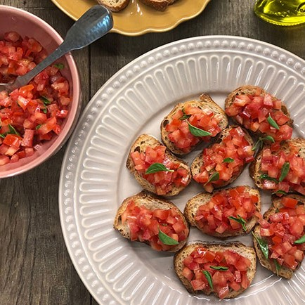

Ingredientes
- Fatias de pão italiano ou baguete
- 2 tomates bem maduros
- 1/2 xicara de azeite + quanto baste para regar o pão
- 1 dente de alho amassado
- 1 colher (sopa) de orégano
- Folhas de manjericão
- Sal a gosto
- Fatias de mussarela (opcional)
Modo de Preparo
- Corte os tomates em cubinhos
- Junte os tomates e o alho ao azeite em um recipiente
- Adicione o manjericão, o orégano e o sal e mexa novamente. Reserve.
- Regue as fatias de pão com azeite a gosto e leve-as ao forno até dourarem.
- Sobre as fatias de pão, coloque as fatias de mussarela (opcional).
- Coloque por cima de cada uma um pouco da mistura e sirva ainda quentinho, finalize com folhinhas de manjericão e volte com as torradas ao forno por de 5 a 10 minutos.
BRUSCHETTA
Bruschetta é um antepasto italiano feito à base de pão, que é tostado em grelha com azeite e depois esfregado com alho. Há diversas variações.O nome vem das regiões do Lazio e de Abruzzo, da palavra brusciato e significa tostado ou torrado. A bruschetta também pode receber outros nomes, como “Fetunta”, na região da Toscana, uma união das palavras “fetta unta”, ou seja, fatia untada.

Você sabia que: A brusquetta sugiu na Itália, no século 15?